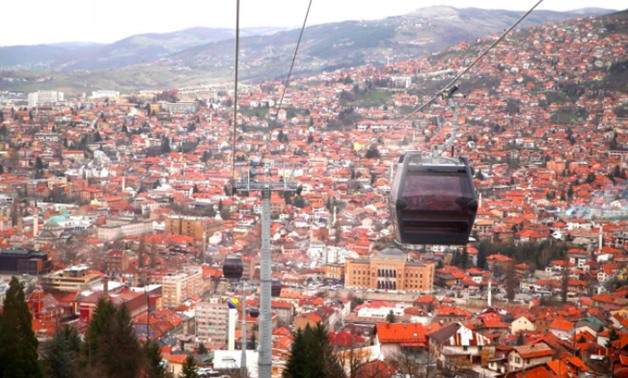

Sarajevo is the capital and economically the strongest city of Bosnia and Herzegovina, a
heart-shaped country located in southeastern Europe, governed by three presidents, each being a
representative of another ethnicity. It’s the place where people are divided by language and
religion, yet all craving world-famous Cevapi meatballs and the aroma of fresh ground coffee beans.
The place where there is a mixture of East and West in the food you eat and the buildings you
observe, where a mosque, a church, and a synagogue stand right next to each other - all due to the
rich history involved, Ottoman Empire and Austro-Hungarian Monarchy. 6th April 1945, the liberation
of Sarajevo in World War II, is known as the Day of the City.
During the 1990s, Sarajevo could be found on the front pages of daily newspapers around the
whole
world. This city entered the longest siege since WWII in 1992 during one of the bloodiest wars
in
recent European history. During the siege, in 1995, Sarajevo Film Festival (SFF) was founded.
Today,
it is one of the most prominent and major film festivals in Europe which brings famous
international
and local people to Sarajevo in August every year. This video was made for the SFF and it can
truly
serve as a representation of how finding yourself in Sarajevo feels like.